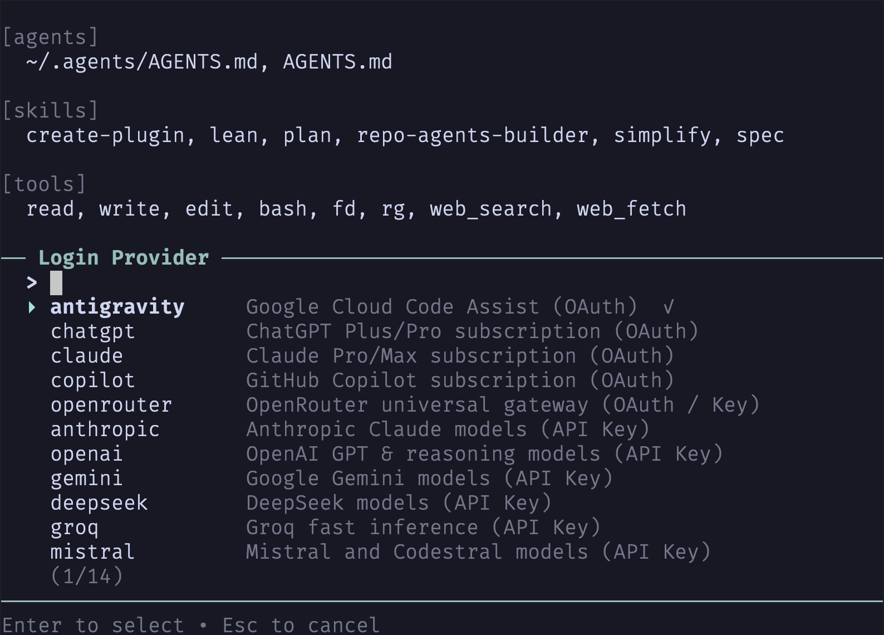
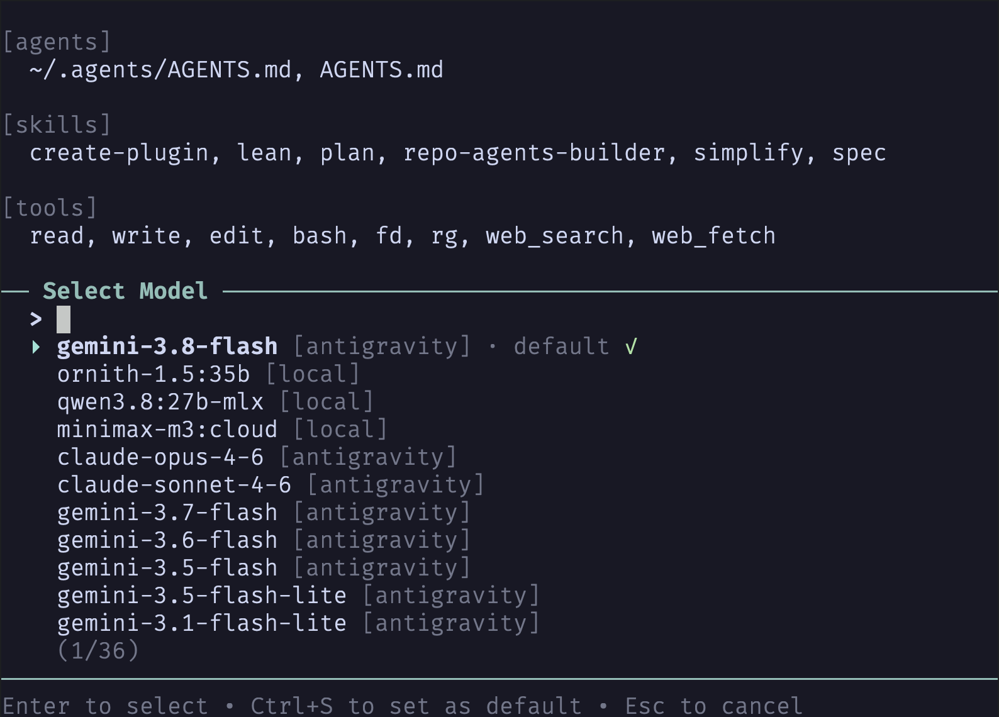

Getting Started with rho
rho is a fast, clean, minimal coding-agent CLI built in Rust. It delivers native performance, strict in-process safety boundaries, session persistence, and an extensible daemon plugin subsystem.

Installation
cargo install rhobrew install casonadams/tap/rhogh release download -R casonadams/rhoCLI Commands & Options
rho provides a focused set of subcommands and flags for agent execution, plugin management, and configuration:
# Start interactive multiline REPL
rho
# Execute a one-shot prompt
rho -p "Find and fix memory leaks in parser"
# Continue the last session in the current directory
rho -c
# Interactively browse and select from previous sessions to resume
rho -r
# Resume a specific session by ID (including budget checkpoint)
rho --resume <SESSION_ID>
# Export session to HTML or Markdown
rho --export session.html
# Authenticate an AI provider (OAuth subscription or API key verification)
rho login claude
rho login chatgpt
rho logout anthropic
# List live provider models and context windows
rho models
# Inspect or edit configuration
rho config
rho config model.provider anthropic
# Manage plugins
rho install permission
rho plugin ls
rho plugin inspect tool:bash
rho update all
rho remove permission9 Built-in Native Tools
rho includes 9 fast, native tools designed specifically for coding agents:
read: Safe file inspection with line numbers, chunk offsets, limit bounds, and image sniffing.write: Creates or overwrites files with automatic missing directory creation.edit: Targeted, exact text replacements verifying strict single-match semantics.bash: Process group cleanup, timeout watchdog, and binary output sanitization.fd: Fast gitignore-aware workspace file discovery with smart-case regex matching.rg: Content search, gitignore-aware, skipping binaries and bounding output lines.web_search: Live web searching with domain filters and structured summaries.web_fetch: Clean extraction of markdown, plain text, HTML, CSV, or feeds from URLs.script: Single-turn sequential tool batching with pure-Rust regex line filtering and context expansion.
Providers, Authentication & Rolling Quotas
rho supports both API keys and subscription OAuth. Run rho login <provider> to authenticate:
- Subscription OAuth:
chatgpt,copilot,antigravity,claude,openrouter. - API Key Providers:
anthropic,openai,deepseek,gemini,groq,xai,mistral,cohere,ollama-cloud. - Local Models:
local(runs Ollama locally viaOLLAMA_HOST). - Live Rolling Quotas: Interactive footer displays 5-hour and weekly remaining cooldowns for Antigravity and ChatGPT (e.g.
95% 4h23m 89% 3d21h) and monthly quota for Ollama Cloud.

Configure defaults globally in ~/.config/rho/config.toml or per-project in .rho/config.toml:
[model]
provider = "anthropic"
model = "claude-3-7-sonnet-latest"
temperature = 0.0
[general]
max_turns = 1000
context_window_messages = 24
compaction_max_bytes = 8192
# Custom OpenAI-compatible endpoints
[providers.my-local-endpoint]
base_url = "http://127.0.0.1:8000/v1"
api_key = "optional"
# UI block framing and border colors (defaults to "gray")
[ui]
block_style = "border" # "border" (outline) or "solid" (fill)
user_border = "gray" # User prompt blocks
agent_border = "gray" # Agent / sub-agent blocks
tool_border = "gray" # Tool / command cards
bash_success_border = "gray" # Successful bash commands
bash_error_border = "red" # Failed bash commandsSafety Guardrails & Modal Controls
rho isolates mutating operations (file writes, edits, shell commands) behind an interactive modal:
- [y] Allow: Authorize this specific operation.
- [e] Edit: Inspect and adjust command arguments interactively before execution.
- [a] Always: Authorize this command or pattern for the remainder of the session.
- [n] Deny: Reject execution and return helpful feedback to the model.
Use rho --no-permission to bypass permission modals for headless non-interactive CI environments.
Privacy & Zero Telemetry
rho collects nothing. There is zero telemetry, zero background tracking, zero analytics, and zero phone-home pings built into the binary.
- Zero Telemetry & Analytics: rho does not include any telemetry frameworks, crash reporters (such as Sentry), tracking pixels, or usage analytics. It never records, collects, or transmits your command history, tool invocations, prompts, or error traces to rho developers or third parties.
- Direct Provider Communication: Network requests are made strictly and directly to the model endpoints you configure (e.g. Anthropic, OpenAI, Google Gemini, local Ollama, or custom OpenAI-compatible endpoints). There are no intermediary proxy servers, hosted cloud backends, or data collection relays.
- Local-Only Storage: Your configuration files, API keys, session transcripts, branch trees, and context caches are stored strictly on your local disk in standard user config and data directories (
~/.config/rho,~/.local/share/rho, and local workspace.rho/). - Explicit Tool Networking: Network access by tools is bounded and explicit—only when you or the agent run web tools (
web_search,web_fetch) or bash commands that perform network requests. Mutating and network-accessing tools can be audited and gated via Safety Guardrails. - Open Source & Auditable: The entire rho codebase is open source under MIT / Apache-2.0. You can inspect the source code and dependencies to verify that no tracking or telemetry code exists.
Keyboard Shortcuts & Commands
| Shortcut | Context | Action |
|---|---|---|
| Escape | Any | Cancel running turn, abort active tool execution, or dismiss modal popup |
| Ctrl+C | Editor / Modal | Clear draft input or search query (never interrupts turns or exits) |
| Ctrl+D | Editor | Exit session when editor is empty |
| Ctrl+L | Editor | Open interactive provider and model selector modal (fuzzy search) |
| Shift+Tab | Editor | Cycle thinking effort (off → minimal → low → medium → high → xhigh → max) |
| Ctrl+O | Editor | Open interactive session turn history DAG tree viewer |
| Ctrl+S | Editor / Prompt | Toggle block style between outline borders and solid fills (autosaved to config) |
| Ctrl+S | Selector Modals | Save currently selected model or thinking level as default |
| Enter | Agent running | Queue immediate steering message to execute after active tool |
| Alt+Enter | Any | Enqueue follow-up prompt to FIFO message queue (or newline) |
Slash Commands
| Command | Description |
|---|---|
/model |
Open interactive model and provider switcher modal |

/thinking |
Open interactive thinking effort level selector |
/plugin |
List active MCP tool servers, plugins, and registration health |
/mcp |
Open the interactive Model Context Protocol modal and toggle servers |
/reload |
Reload configuration, skills, and tools without losing conversation history |
/tokens |
Display context window usage, turn counts, and cost breakdown |
/tree |
View session turn DAG tree and branch navigation |
/exit |
Exit the interactive session cleanly |
Headless & IDE RPC Server Mode
For editor extensions (VS Code, Neovim, Zed) and headless automation harnesses, rho provides a fully concurrent, non-blocking JSON-lines RPC server over standard I/O:
rho --mode rpcUnlike synchronous wrappers, rho's RPC loop processes client commands concurrently while turns run. Clients can abort running tasks, steer execution at tool seams, resolve interactive permission prompts, and navigate conversation tree DAGs without blocking stdout.
RPC Commands Reference
| Command | Parameters | Description |
|---|---|---|
prompt |
{ "message": "..." } |
Start an agent turn asynchronously. Emits streaming text, reasoning chunks, and tool events. |
steer |
{ "message": "..." } |
Inject a steering prompt delivered immediately after the active tool finishes. |
abort |
{} |
Interrupt active model generation or abort executing tool processes immediately. |
tool_response |
{ "approval_id": "...", "decision": "allow" | "deny" | "edit: <cmd>" | "always" } |
Resolve a pending permission prompt emitted by tool_approval_request. |
get_state |
{} |
Query active session ID, model, provider, thinking level, and status (idle, busy, waiting_approval). |
get_tree |
{} |
Retrieve the complete conversation history DAG, checkpoints, active leaf ID, and entry previews. |
switch_branch |
{ "node_id": "..." } |
Rewind or branch the conversation DAG to a previous turn or checkpoint. |
set_node_label |
{ "node_id": "...", "label": "..." } |
Assign or clear a human-readable bookmark label on a tree node. |
list_sessions |
{} |
Enumerate saved session files, turn counts, last modified timestamps, and titles. |
resume_session |
{ "session_id": "..." } |
Switch the active engine to another saved session ID. |
fork_session |
{ "node_id": "..." } |
Fork the active branch or checkpoint into an isolated new session file. |
set_model |
{ "model": "...", "provider": "..." } |
Hot-swap the active inference model or provider at runtime. |
set_thinking |
{ "level": "off" | "minimal" | "low" | "medium" | "high" | "max" } |
Dynamically adjust reasoning effort for supported reasoning models. |
compact |
{ "instructions": "..." } |
Trigger manual context compaction, optionally passing custom focus instructions. |
exit |
{} |
Cleanly terminate active tasks and shut down the daemon. |
Interactive Tool Approval Flow
When a tool executes a mutating command requiring user consent, rho emits a tool_approval_request event and transitions to status: "waiting_approval":
{"type":"tool_approval_request","approval_id":"appr-b618","tool":"bash","arguments":{"command":"cargo check"},"description":"Run cargo check"}
{"type":"status_changed","status":"waiting_approval"}
The client displays a native UI modal and responds with tool_response:
{"type":"tool_response","approval_id":"appr-b618","decision":"allow"}Dynamic Context Compaction & Token Budgeting
Long-running coding sessions inevitably encounter context window exhaustion. rho incorporates an adaptive, resilient compaction engine designed to preserve critical repository findings while reclaiming token capacity:
- Adaptive Context Threshold: Auto-compaction monitors token pressure against the active model's real context window, automatically scaling reserve budgets across both small local models (8k–32k) and massive cloud windows (200k–1M+).
- Atomic Split-Turn Preservation: Cut points never bisect tool calls from their corresponding tool results, preserving protocol validity for Anthropic and OpenAI schemas.
- Cumulative File Tracking: Across multiple compactions, rho records all modified and inspected workspace files in a durable
<file-operations>XML ledger so file awareness is never lost. - Resilient Deterministic Fallback: If upstream provider network timeouts or rate limits interrupt an LLM summarization call, rho automatically falls back to an offline deterministic fact extractor that constructs a structured summary node without dropping session state.
- Bounded Summary Enforcement: Compaction summaries are strictly clamped to
compaction_max_bytes(default 8,192 bytes), preventing runaway summarizer recursion.
The rho Plugin Daemon Subsystem
Plugins in rho are persistent daemon processes communicating via JSON-RPC 2.0 over standard I/O (stdio). They observe agent execution, steer prompts, enforce guardrails, and invoke host UI services.
Event Lifecycle
| Event | Payload | Description |
|---|---|---|
tool_call |
{ tool_name, args } |
Intercept tool calls before execution. |
tool_result |
{ tool_name, args, output, is_error } |
Inspect or transform tool output after execution. |
invalid_tool_call |
{ tool_name, args, available_tools } |
Intercept hallucinated or misspelled tools to repair dynamically. |
completion_call |
{ turn, prompt, history } |
Audit or patch prompt before LLM completion. |
completion_response |
{ prompt, response } |
Inspect raw model tokens and completion response. |
Plugin Package Management
Install, update, and remove plugins directly through rho without compiling locally. rho fetches precompiled platform binaries from GitHub Releases and registers them in ~/.config/rho/config.toml:
# Bare name (resolves to casonadams/rho-plugin-<name>)
rho install permission
# Pinned release tag
rho install permission@v0.3.0
# GitHub repository slug
rho install owner/repo
# List installed plugins, binary locations, and health
rho plugin ls
# Inspect active capability origins
rho plugin inspect tool:bash
# Update rho or installed plugins
rho update all
rho update permission
# Safely remove plugin and delete binary from ~/.cargo/bin
rho remove permissionDeveloping Plugins with rho-plugin-sdk
Build native plugins in Rust using the official rho-plugin-sdk crate. Plugins can intercept tools, repair invalid calls, and request host UI confirmation:
use async_trait::async_trait;
use rho_plugin_sdk::{Flow, HostContext, Plugin, StepEvent, serve};
struct RustGuard;
#[async_trait]
impl Plugin for RustGuard {
fn name(&self) -> &str {
"rust-guard"
}
fn subscriptions(&self) -> Vec {
vec!["tool_call".into(), "invalid_tool_call".into()]
}
async fn on_event(&self, event: StepEvent, ctx: &HostContext) -> Flow {
match event {
StepEvent::ToolCall { tool_name, args } => {
if tool_name == "bash"
&& args.get("command").and_then(|v| v.as_str()).unwrap_or("").contains("sudo")
{
let allowed = ctx.confirm("Security Alert", "Allow sudo execution?").await;
if !allowed {
ctx.block("Security Gate", "Blocked unapproved sudo command", "error").await;
return Flow::skip("Permission denied by user.");
}
}
ctx.set_status("security", Some("🔒 Guard Active")).await;
Flow::cont()
}
StepEvent::InvalidToolCall { tool_name, .. } => {
// Self-healing: automatically repair hallucinated tool aliases
if tool_name == "sh" || tool_name == "shell" {
return Flow::repair("bash");
}
Flow::cont()
}
_ => Flow::cont(),
}
}
}
#[tokio::main]
async fn main() {
serve(RustGuard).await;
} Configuring Model Context Protocol (MCP) Servers
MCP servers are tool providers configured in ~/.config/rho/config.toml, .rho/config.toml, or standard workspace .mcp.json. rho supports both local stdio child processes and remote streamable-http (with OAuth 2.1 authentication and SSE streaming). All exposed tools are automatically namespaced:
# Inspect, test, and manage MCP servers
rho mcp list
rho mcp test filesystem
rho mcp login remote-jira
rho mcp add db "https://mcp.db.example.com/mcp"
# In the interactive REPL:
/mcp[mcp]
enabled = true
[mcp.servers.filesystem]
command = "npx"
args = ["-y", "@modelcontextprotocol/server-filesystem", "/Users/username/Desktop"]
enabled = true
[mcp.servers.github]
command = "npx"
args = ["-y", "@modelcontextprotocol/server-github"]
env = { GITHUB_PERSONAL_ACCESS_TOKEN = "ghp_..." }
enabled = true